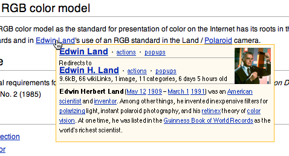
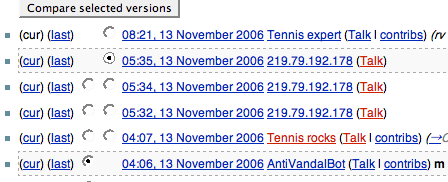
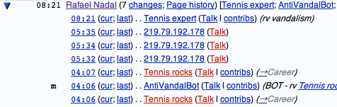
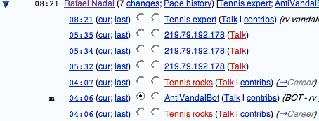

11.14.06
Posted in programming at 1:06 am by danvk
The reasons that are typically mentioned for getting an account on Wikipedia are: 1) Your edits appear more reputable, 2) You can send/receive messages to/from other Wikipedians, and 3) You get a watchlist, which shows all recent edits to articles that interest you.
All of these reasons are geared towards writers, not readers. But there’s another reason for readers to register that I’ve never heard mentioned: registered users can add their own custom Javascript to Wikipedia pages. Why would anyone want to do this?
Reason #1: Navigation Popups Wikipedia encourages random browsing like no other site can. With Navigation Popups, you hover over a link and it shows a little preview of the article. Perfect for answering the “what on earth does that article look like?” question without disrupting your reading.

Once you start using Navigation Popups, there’s no going back. I often wish the rest of the web had these. For installation instructions, see Lupin’s instructions. The installation involves adding a single line to your User:/monobook.js page.
Reason #2: ISBNs When you click an ISBN on Wikipedia without an account, it takes you to a god-awful page listing every conceivable site you might be interested in. This is Wikipedia’s way of not picking sides. But I just want it to take me directly to Amazon. A user Javascript can do it. See this page for details.
Reason #3: Hacking! There’s nothing like being able to fix your annoyances on a site. One of my annoyances: while it’s obvious how to diff two specific edits with this interface:

It’s not at all obvious with this interface:

I know that clicking “7 Changes” will show me the diff of all those edits to the page, but I have no idea what the cur/last links do. So I hacked up a script to make it look like this:

Now it’s clear how to do the diff. To install this script, check out my monobook.js.
Permalink
10.25.06
Posted in programming at 11:10 pm by danvk
By the end of summer 2003, I was tired of Perl and ready to pick up a new scripting language. The only question was which one to choose, Python or Ruby? I staged my own shootout to decide. A hard drive crash prevented me from putting it online at the time, but I recently found the writeup, which you can read here. The short and sweet:
First of all, I’ll throw Perl right out. I love the language, but not for object-oriented programming. To write a purely procedural program I’d take it over both Ruby and Python any day of the week, but not for OO.
If I had my choice in the matter, I would use Ruby. It’s [sic] syntax seems cleaner, and it’s object orientation doesn’t seem hackish in the least. It’s performance, however, left a lot to be desired. Granted, deep recursion probably isn’t the most widely used technique, but there’s no reason it shouldn’t work. For a different sort of problem, I’d likely choose Ruby, though I’m worried I might have to switch over to Python if I ran into similar problems.
It’s interesting to read this in retrospect, knowing that i used Perl for the next three years before switching to Ruby this past summer. It was hard, but I developed a rule that’s helped. If I start writing a Perl program and it’s longer than two lines, I’ll switch over to Ruby. I’m typically glad I did. I’ve often wondered, in retrospect, why I didn’t switch back then.
First of all, why oh why did I have to use the Josephus problem? I’d been reading the Mozart/Oz book that summer and it seemed reasonable. I’d also just completed Rice’s Comp 212 class and thought that Objects were pretty neat. This test came from the Mozart book, used objects, and had a cool name.
Unfortunately, it also exposed a low stack limit in Ruby 1.6. If only I’d known about the ulimit command back then. If only Ruby 1.8 had been released on July 4, 2003 and not August 4. I can run the same Ruby program now and get up to N=547 with no difficulty. Recursion isn’t a particularly common technique in Ruby, so this test artificially punished it.
So why didn’t I follow my own advice and switch to Python back in 2003? Rather than throwing out Perl, I threw out OO. My post-Comp 212 interest in OO faded quickly, and it was back to Perl for those “purely procedural programs.”
Permalink
10.21.06
Posted in books, programming, reviews at 12:25 am by danvk
 Earlier today, Ars linked over to a great list of Mac applications that make switching worthwhile. I’ve used plenty of them, (Adium, Transmit, VLC, Firefox, Thunderbird) but there was one app I’d never heard of that especially stood out to me. It’s one of those brilliantly simple ideas that I wish I’d thought of first.
Earlier today, Ars linked over to a great list of Mac applications that make switching worthwhile. I’ve used plenty of them, (Adium, Transmit, VLC, Firefox, Thunderbird) but there was one app I’d never heard of that especially stood out to me. It’s one of those brilliantly simple ideas that I wish I’d thought of first.
Delicious Library turns your MacBook’s iSight camera into a barcode scanner. Just put wave a book in front of the screen and DL fills in all the details. This is so spectacularly cool that it just must be tried. The scanning was accurate whenever it worked, which was about 90% of the time. Some books have smaller-than-normal ISBN barcodes, and these gave it trouble. The only downside is that it’s a limited demo, and the full application costs an outrageous $40.
Before I discovered the San Jose library, I had an idea for a 20% project at Google. Wouldn’t it be cool if every Google employee made a list of the books they owned and were willing to share? I doubt there’s any library that could beat the Google workforce in sci-fi or CS literature. The problem with this idea is that data entry is painful. I can’t imagine typing every single ISBN of all my hundreds of books onto a computer, let alone convincing other people to do it. Delicious Library turns this problem completely on its head. Not only does it make entering ISBNs easy, it makes it exciting. I wouldn’t have thought that was possible before discovering this program.
I really wish Delicious Library was open source. If it were, I’d implement that Google Book share. But as it is, I’d be stuck learning Apple’s iSight API, the intricacies of barcodes, and probably Objective-C/Cocoa. I’m sure it would all be very interesting, but not when I’m already developing software fifty hours a week…
Permalink
10.17.06
Posted in boggle, programming at 11:16 pm by danvk
I’ve updated my Boggle program to use the Enable2K Scrabble word list. It’s significantly better than the old linux spell-checking dictionary I’d been using. It contains more of the words with suffixes like -s, -ed, -er, -ing that are so crucial to a high-scoring Boggle board. The updated online Boggle solver remains here. And Hasbro– for requiring a form post to look up a word…
I’ve run several hundred thousand boggle gradients with this new word file and I’ve found a new top dog: plsteaiertnrsges, clocking in at 1,045 words and a whopping 3,625 points! I’ll blog about the process I used to get this in the next week or two.
Permalink
10.10.06
Posted in books, programming at 11:26 pm by danvk
I stubmled across “Code Reads”, an interesting new series on famous essays/books in programming. The first was on the most famous of all programming books, The Mythical Man-Month. I heard the book’s title many times before I understood it. The key was finding out that it was about software management. Then it clicked that “man-month” was a unit that implied a doubling of men meant a halving of development time. That the unit is “mythical” is an interesting statement about the dynamics of software development. So there you go.
I wanted to subscribe to the feed, but I couldn’t get the Code Reads without getting all of Scott Rosenyard’s ramblings about the Iraq War and Mark Foley. There was no clear way to subscribe to the just the “Code Reads” category. Google Reader had no options to filter out the articles I wanted. Neither did Feed Burner. I came up with two solutions:
- Google Blog Search I searched for “Code Reads” on Scott’s site and subscribed to an RSS feed of the search results. This worked great, except that the feed only contained short snippets for each article, whereas the site’s RSS contained nearly-full reviews. Workable, but not ideal.
- Ask dsandler, resident RSS guru. Through ways I don’t fully understand, he found http://www.wordyard.com/category/code-reads/feed/, which works perfectly.
I guess Scott disabled some category-specific feeds from his blog, but didn’t do a completely thorough job. Here’s hoping it stays that way!
Permalink
« Previous Page — « Previous entries
Next entries » — Next Page »